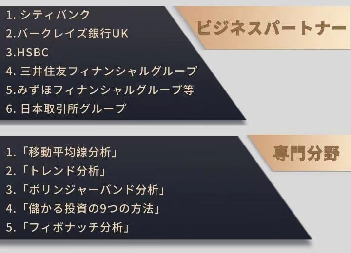

最強の投資家は30歳で初めて働きに出て、裕福な家庭で育ったというバックボーンもなく、毎日12時間も働いていました。完全に社畜です。そんな彼が、 どのようにして、株式投資で成功し、人生の勝ち組になれたのか。
30歳の年に私はアルバイトとして、人生初の仕事に就きました。10年間色々な業務を経験しました。毎年昇給していましたが、同世代に比べてキャリアや経験などが遅れている私は、
給料の限界を感じるようになりました。全社の1%に過ぎない富裕層の会社経営者になっても、給料だけではお金持ちにはなれないと思いました。しかし、私は仕事を通じて自分の価値を証明したいと思っています。
大きなお金を手に入れてこそ、自由な人生を送ることができると思い、株式投資の道を選びました。
2019年、私はエンジェル投資家が集まる説明会に参加し、自らの投資ビジョンを説明し、自分の全財産と合わせて30万ドルの調達に成功し、株式投資を始めました。株式投資開始から、1年間で600万ドルの利益を上げ、2年目で1178万ドルの利益を超えました。ドル、証券投資の実践コンテストにも参加し、コンテストの過去最高のリターンを記録し、元金を4倍にすることに成功しました。
このような結果は自分でも信じられないほどですが、周りの友人も驚いており、投資の秘訣を尋ねてきました。皆さんは私の収益率以外にも、毎日仕事をしている事に驚いています。
12時間労働の血と汗のサラリーマン生活の上、投資できる時間があるなんて不思議だと感じています。
私は真剣に投資を始めてから何年も経っています。私は投資の達人ではありません。有名な投資家でもありません。独占や特別な投資テクニックはありません。運だけです。ただ私は投資を初めてから、非常に優秀な株式投資の先生と知り合いになる事ができました。現在も継続して株の勉強をしており、私の株式投資の勢いは今も続いています。
藤田 孝宏
大学：スタンフォード大学
学位：金融学修士
前職：モルガンスタンレー／ファイナンシャルストラテジスト
経歴：滋賀県愛知郡愛荘町出身。シンガポール国立大学、スタンフォード大学に留学し、国際金融を専門に学ぶ。 藤田さんは帰国後、日本取引所グループ代表の清田のもとで、金融・商品取引所の運営と関連業務に携わった。
コーポレートファイナンス、クロスボーダーM&Aアドバイザリー、キャピタルマーケット、その他投資銀行、証券業務に20年以上携わる。
あらゆる投資市場を理解し、高い相場観を持ち、インバース理論を含むテクニカル研究において高い実績を上げている。
波動理論やロングショートのダブルワークに精通し、豊富な取引経験で日本の株式市場で安定したリターンを獲得し続けています!

新しい株式投資家を育てるために、エンジェル投資家が集まる説明会の規模をさらに拡大するつもりです。株式市場で稼ぐ秘訣を身につけるとともに、出資して頂ける方々をさらに拡大するために、2022年3月、説明会に参加頂けるエンジェル投資家達を再募集することを決めました。
この説明会の趣旨を理解して参加して頂くことで、私も周りの方々と株式投資で利益を出すために、自分の経験と知識を元に、これから値上がりする株を共有するつもりです。参加頂いた多くの人は良い結果を出し、
多くの利益を出しています。皆さんが株式投資を通じて、より良い生活を過ごせているのを見て、私の投資方法は間違ってなかったと思えるようになりました。
すべての投資初心者はこの段階を経験します：他の人が投資してお金を稼ぐのを見て、投資を始めようとしている。自分も投資したいが、どうすればいいか分からないし、雰囲気に流されて株を買ってしまい、
苦労して稼いだお金を損してしまいます。
初心者が株に投資するには、専門家について学ぶのが一番です。特に先生のようなプロに学ぶのが正しいと思います。
株式市場がどのように動いているのかを短時間で知りたい人は、先生の
LINE：
https://cutt.ly/RNGRYaP
先生はいつも無料で金融商品の運用判断を教えてくれます。株、外貨の事など色々教えてくれます。かなり実用的でしっかりした内容で、初心者やベテランにも参考になります。
多くの株主の友人たちがこのメッセージを身近な投資家の友人に共有することを望んでおり、先生は多くの投資家のために無料の情報交換グループを設立し、情報を集めているプロの投資家達は、より多くの投資ユーザーに次の株式投資で儲けさせます。情報の必要な人達はLINEを登録すると無料で先生の株式情報交換グループに参加することができます。
ホットなディスカッションエリア(1,026)
先生はさすがですね。5年間株を売買してきたベテランですが、先生の知識にはかなわないです。私は先生のLINE：
https://cutt.ly/RNGRYaP
を登録しました。よろしくお願いします。
2022/10/07 16:34
私も長い期間、株式投資をしていますが、全然利益が出ませんでした。先生に学んで絶対に利益を出したいです。
2022/10/07 12:18
正直に言って、投資の先生の話は色々聞いて来ましたが、私は先生の話しか聞きません。
2022/10/07 11:29
いいですね。先生はすべての株の状況をよく知っていて、アドバイスもとても役に立ちます。先生が推奨する株式を買って3ヵ月で利益がでました！！！
2022/10/07 10:08
私は前から先生のLINE：
https://cutt.ly/RNGRYaP
、を登録し、数か月間先生の情報発信を見てきましたが、先生は本当に専門的で、精度が高いことに気づきました。基本的に毎週のリターン率は10%-20%前後で、しかも注文する時にグループから通知があります。先生の意見に耳を傾け、売買していなかった事を後悔しています…
2022/10/07 09:38
ずっと投資の経験がなかったですが、勉強するために先生のLINE：https://cutt.ly/RNGRYaP
を登録しました。ありがとうございます。
2022/10/07 09:24
去年、先生に推奨頂いた、川崎汽船（9107）、大阪チタニウム（2609）、レーザーテック（6920）を買って、利益を出す事ができました。ありがとうございます。
2022/10/07 17:48